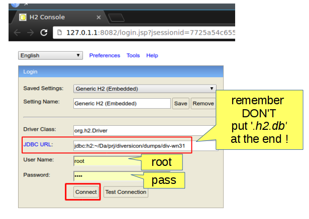
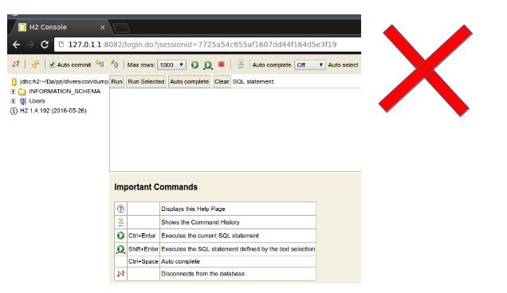
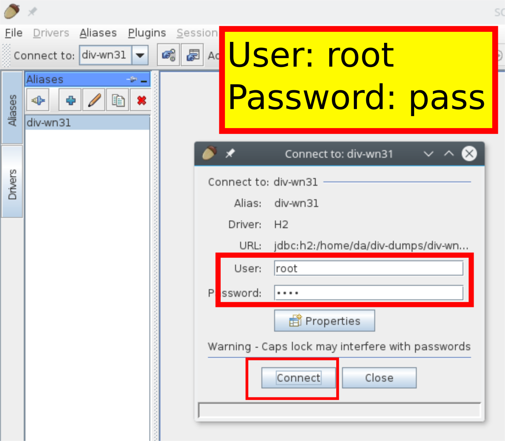

For preprocessing and quering XMLs we suggest BaseX database, while for browsing H2 SQL databases you can use the included H2 server. A better tool for db management could be SquirrelSQL
BaseX
If you need to browse large XMLs you can you BaseX tool.
For example, supposing you:
1) installed BaseX
2) basex executable is on your path
Here we show how to load the Diversicon Wordnet 3.1 XML:
Click on new database and the panel that pops up, put this in General tab:

In Indexes tab check Full-text:

Then press OK, you should see a screen like this:

XQuery
If you need to transform XML to do some preprocessing before importing them into Diversicon, using XQuery language with the BaseX implementation could be a good choice.
For some common tasks, we already provide scripts in $exec{eu.kidf.diversicon.cli.DiverCli.SCRIPTS_XML_PATH}
For example, suppose you have BaseX installed and want to rename prefixes of an XML.
From DiverCli installation directory you coud run a command like this:
basex -bold-prefix=sm -bnew-prefix=mysm -bin-file=lexres/smartphones.xml -o my-smartphones.xml scripts/rename-prefixes.xql
NOTE: this script is just an example, to replace everything you will still have to fix manually the xmlns: with the new prefix !
To edit XQuery files, you might use Visual Studio Code with the XML Tools extension.
H2
To browse H2 databases, you can use H2 own browsing tool. It is included in DiverCLI distribution under bin/h2 directory.
To run it on Linux / Mac:
cd bin/h2/bin
./h2.sh
On Windows:
cd bin/h2/bin
h2.bat
This should open a browser pointed at a screen like the following, where we try to connect to a Diversicon Wordnet H2 DB :
If you put the correct db url, you should see a panel like this, with all the tables listed in the left panel:
If you put the wrong url, probably h2 will create a new empty database at that url and you will see this panel:
Squirrel SQL
Squirrel SQL has lots of features, although sometimes UI might look a bit confusing.

Before connecting to the database, you need to tell Squirrel where the H2 driver is. You can find
H2 binary jar inside the DiverCLI distribution, and configure Squirrel like this:

Afterwards, you can proceed defining an alias to a database. For example, here we are using
the h2 database Wordnet 3.1 downloaded from Diversicon website:

Then you are ready to connect:
